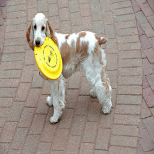

155
Text: a close up of a model airplane on a field Raw: a close up of a model airplane on a fieldText: a small airplane sitting on top of a grass covered field Raw: a _ s m a l l _ a i r p l a n e _ s i t t i n g _ o n _ t o p _ o f _ a _ g r a s s _ c o v e r e d _ f i e l dText: a small airplane sitting on the grass Raw:
263 32 208 5 336 100 803 256 740 913 299 581 526 142 44 135 769 100 141 250 543 975 432 651 538 133 911 847 89 936 48 336 5 467 360 606 360 801 1009 398 847 936 869 254 1003 442 852 288 849 273 723 44 (...truncated 39 chars)
1686
Text: a man riding skis down a snow covered slope Raw: a man riding skis down a snow covered slopeText: a woman skiing down a snow covered slope Raw: a _ w o m a n _ s k i i n g _ d o w n _ a _ s n o w _ c o v e r e d _ s l o p eText: a man riding skis down a snowy slope Raw:
263 32 208 263 336 501 791 728 971 728 141 536 113 580 453 12 556 807 715 1009 398 89 880 938 457 924 351 775 256 740 913 637 706 489 860 58 442 42 880 299 581 245 495 775 740 299 304 538 157 522 689 (...truncated 19 chars)
3233
Text: a tray of food on a table Raw: a tray of food on a tableText: a tray filled with a bunch of food items Raw: a _ t r a y _ f i l l e d _ w i t h _ a _ b u n c h _ o f _ f o o d _ i t e m sText: a plastic tray with fruit sitting on top Raw:
263 32 208 5 336 100 803 256 560 873 986 96 651 538 133 466 953 451 297 216 637 427 825 560 846 476 417 870 985 703 445 242 362 825 256 560 476 5 208 32 208 5 336 815 144 815 717 467 461 192 243 76 62 (...truncated 122 chars)
4882
Text: a man taking a picture of a pizza Raw: a man taking a picture of a pizzaText: a man is taking a picture of a pizza Raw: a _ m a n _ i s _ t a k i n g _ a _ p i c t u r e _ o f _ a _ p i z z aText: a man sitting at a table eating pizza Raw:
263 32 208 263 336 501 791 728 971 728 141 536 113 580 66 360 606 59 801 1009 398 329 852 746 417 272 417 766 362 614 156 341 135 769 5 208 32 208 5 336 717 128 226 1009 398 847 89 320 873 924 765 27 (...truncated 28 chars)
6515
Text: a parking meter on the side of the road Raw: a parking meter on the side of the roadText: a parking meter on the side of the road Raw: a _ p a r k i n g _ m e t e r _ o n _ t h e _ s i d e _ o f _ t h e _ r o a dText: a parking meter on the side of the road Raw:
263 32 208 5 336 100 803 256 560 320 432 72 507 535 685 765 398 89 728 971 728 962 825 1009 663 816 820 230 769 5 208 32 208 5 336 501 254 1003 442 42 791 59 360 606 360 552 807 242 801 288 791 993 87 (...truncated 34 chars)
8309
Text: a group of motorcycles parked in a parking lot Raw: a group of motorcycles parked in a parking lotText: a parking lot filled with cars and motorcycles Raw: a _ p a r k i n g _ l o t _ f i l l e d _ w i t h _ c a r s _ a n d _ m o t o r c y c l e sText: a couple of cars sitting on the side of a street Raw:
263 32 208 5 336 100 803 256 560 873 986 873 595 872 284 614 156 341 135 769 476 873 986 72 550 1015 587 181 913 1013 467 5 467 360 606 360 801 1009 398 847 89 100 869 254 1003 442 42 791 59 360 606 3 (...truncated 94 chars)
11809
Text: a man in a black shirt catching a frisbee Raw: a man in a black shirt catching a frisbeeText: a person on a field with a frisbee Raw: a _ p e r s o n _ o n _ a _ f i e l d _ w i t h _ a _ f r i s b e eText: a man standing in the grass with a ball Raw:
263 32 208 263 336 501 791 728 971 728 141 536 113 580 66 880 216 637 427 536 113 580 329 398 337 852 442 852 288 849 273 723 445 466 953 451 297 913 1013 467 5 208 32 208 5 336 815 144 815 494 909 49 (...truncated 41 chars)
13471
Text: a couple of people sitting on a bench Raw: a couple of people sitting on a benchText: a couple of people sitting on a wooden bench Raw: a _ c o u p l e _ o f _ p e o p l e _ s i t t i n g _ o n _ a _ w o o d e n _ b e n c hText: a man sitting on a bench on the beach Raw:
263 32 208 263 336 501 791 728 971 728 141 536 113 580 66 360 606 59 801 1009 398 852 254 1003 442 791 582 249 427 536 113 580 66 293 202 1013 467 5 208 32 208 5 336 501 254 1003 442 791 582 249 226 9 (...truncated 31 chars)
15061
Text: a man riding a wave on top of a surfboard Raw: a man riding a wave on top of a surfboardText: a man riding a wave on top of a surfboard Raw: a _ m a n _ r i d i n g _ a _ w a v e _ o n _ t o p _ o f _ a _ s u r f b o a r dText: a man riding a wave on a surfboard Raw:
263 32 208 263 336 501 791 728 971 728 141 536 113 580 453 12 556 466 801 1009 398 329 852 993 157 120 362 766 825 560 224 790 254 442 791 59 606 360 250 543 975 461 809 284 228 622 820 654 846 336 20 (...truncated 4 chars)
16622
Text: a black and white photo of a street sign Raw: a black and white photo of a street signText: a black and white photo of a street sign Raw: a _ b l a c k _ a n d _ w h i t e _ p h o t o _ o f _ a _ s t r e e t _ s i g nText: a street sign and a street sign Raw:
263 32 208 5 336 100 803 256 740 913 880 240 985 76 62 962 560 27 289 360 606 794 552 807 242 911 89 936 48 336 5 208 5 336 100 746 827 119 936 48 336 5 208 5 336 100 803 256 740 913 880 240 985 76 62 (...truncated 64 chars)
18302
Text: a man swinging a tennis racquet on a tennis court Raw: a man swinging a tennis racquet on a tennis courtText: a man holding a tennis racquet on a tennis court Raw: a _ m a n _ h o l d i n g _ a _ t e n n i s _ r a c q u e t _ o n _ a _ t e n n i s _ c o u r tText: a man is standing on a tennis court Raw:
263 32 208 263 336 501 791 728 971 728 141 536 113 580 66 880 216 637 427 536 113 580 329 398 852 254 1003 442 791 417 272 480 1003 442 852 913 938 457 986 651 228 622 820 846 476 5 208 32
19877
Text: a body of water with boats in it Raw: a body of water with boats in itText: a body of water with a boat in the water Raw: a _ b o d y _ o f _ w a t e r _ w i t h _ a _ b o a t _ i n _ t h e _ w a t e rText: a large body of water with boats sitting on the water Raw:
263 32 208 263 336 501 993 151 157 81 142 550 1015 16 293 16 176 414 790 174 807 242 313 153 313 129 815 81 831 142 552 663 816 820 230 769 5 336 815 144 815 494 181 467 224 414 522 7 522 654 27 289 1 (...truncated 108 chars)
21549
Text: a kitchen sink with a red bowl on top of it Raw: a kitchen sink with a red bowl on top of itText: a kitchen with a refrigerator and a refrigerator Raw: a _ k i t c h e n _ w i t h _ a _ r e f r i g e r a t o r _ a n d _ a _ r e f r i g e r a t o rText: a small kitchen with a red in and in Raw:
263 32 208 5 336 100 803 256 740 913 299 526 142 44 135 769 5 208 32 208 5 336 100 803 362 825 560 27 873 821 112 916 66 119 936 48 336 5 336 815 144 815 494 181 467 336 100 803 256 803 815 12 445 80 (...truncated 237 chars)
23024

Text: a dog is holding a frisbee in its mouth Raw: a dog is holding a frisbee in its mouthText: a brown and white dog holding a frisbee in its mouth Raw: a _ b r o w n _ a n d _ w h i t e _ d o g _ h o l d i n g _ a _ f r i s b e e _ i n _ i t s _ m o u t hText: a dog walking in a dog holding a yellow frisbee Raw:
263 32 208 5 336 100 803 256 502 706 489 277 174 277 352 654 846 336 5 208 32 208 5 336 815 81 831 142 595 30 685 765 398 847 89 48 100 852 329 852 288 502 706 489 277 174 277 352 654 846 336 5 208 32 (...truncated 141 chars)
24752
Text: a red and white bus driving down a street Raw: a red and white bus driving down a streetText: a red and white bus parked on the side of the road Raw: a _ r e d _ a n d _ w h i t e _ b u s _ p a r k e d _ o n _ t h e _ s i d e _ o f _ t h e _ r o a dText: a large red bus on the side of the road Raw:
263 32 208 263 336 501 993 151 81 142 550 1015 16 293 16 87 12 445 80 654 846 176 414 284 790 174 451 297 913 1013 467 5 208 32 208 5 336 501 254 1003 442 42 791 59 360 606 360 552 807 242 801 288 791 (...truncated 41 chars)
26030
Text: a couple of cows standing on top of a grass covered field Raw: a couple of cows standing on top of a grass covered fieldText: a couple of cows standing in a field Raw: a _ c o u p l e _ o f _ c o w s _ s t a n d i n g _ i n _ a _ f i e l dText: a couple of cows standing in the grass Raw:
263 32 208 5 336 100 803 256 560 873 986 873 595 872 284 614 156 341 135 769 476 873 821 417 110 860 689 522 135 181 913 1013 467 5 467 1013 880 216 637 427 141 536 113 580 502 1009 160 847 89 48 100 (...truncated 69 chars)
26166
Text: a man in a blue shirt holding a white frisbee Raw: a man in a blue shirt holding a white frisbeeText: a man holding a frisbee in his hand Raw: a _ m a n _ h o l d i n g _ a _ f r i s b e e _ i n _ h i s _ h a n dText: a man standing next to a white frisbee Raw:
263 32 208 263 336 501 791 728 971 728 141 536 113 580 66 880 216 637 427 536 113 580 329 398 329 728 42 0 535 880 216 637 489 121 495 151 81 749 133 715 825 560 192 863 243 76 62 740 922 913 249 226 (...truncated 24 chars)
27582
Text: an orange and white cat laying on top of a chair Raw: an orange and white cat laying on top of a chairText: an orange and white cat laying on top of a carpet Raw: a n _ o r a n g e _ a n d _ w h i t e _ c a t _ l a y i n g _ o n _ t o p _ o f _ a _ c a r p e tText: a large cat sitting on a couch Raw:
263 32 208 263 336 501 993 151 157 142 550 1015 16 293 289 873 821 417 564 953 0 535 27 289 360 606 360 801 1009 398 847 89 100 869 254 1003 442 852 288 417 272 70 480 860 537 689 289 293 202 467 5 20 (...truncated 4 chars)
29172
Text: a polar bear swimming in a body of water Raw: a polar bear swimming in a body of waterText: a couple of bears swimming in the water Raw: a _ c o u p l e _ o f _ b e a r s _ s w i m m i n g _ i n _ t h e _ w a t e rText: the large brown bears in the water Raw:
263 32 208 263 336 501 993 151 81 142 550 1015 16 293 289 176 190 723 445 110 860 58 103 502 706 427 141 250 543 820 587 181 913 1013 467 5 208 32 208 5 336 100 746 827 936 852 791 151 81 831 142 174 (...truncated 28 chars)
30773
Text: a bike parked next to a bus on a city street Raw: a bike parked next to a bus on a city streetText: a black and white photo of a bus and a bus Raw: a _ b l a c k _ a n d _ w h i t e _ p h o t o _ o f _ a _ b u s _ a n d _ a _ b u sText: a bike parked on the side of a city street Raw:
263 32 208 263 336 501 176 414 284 133 807 715 825 560 27 476 320 432 72 550 507 975 27 846 100 869 254 1003 442 42 791 59 360 606 360 552 807 715 362 560 846 869 254 501 582 791 59 606 360 801 1009 2 (...truncated 54 chars)